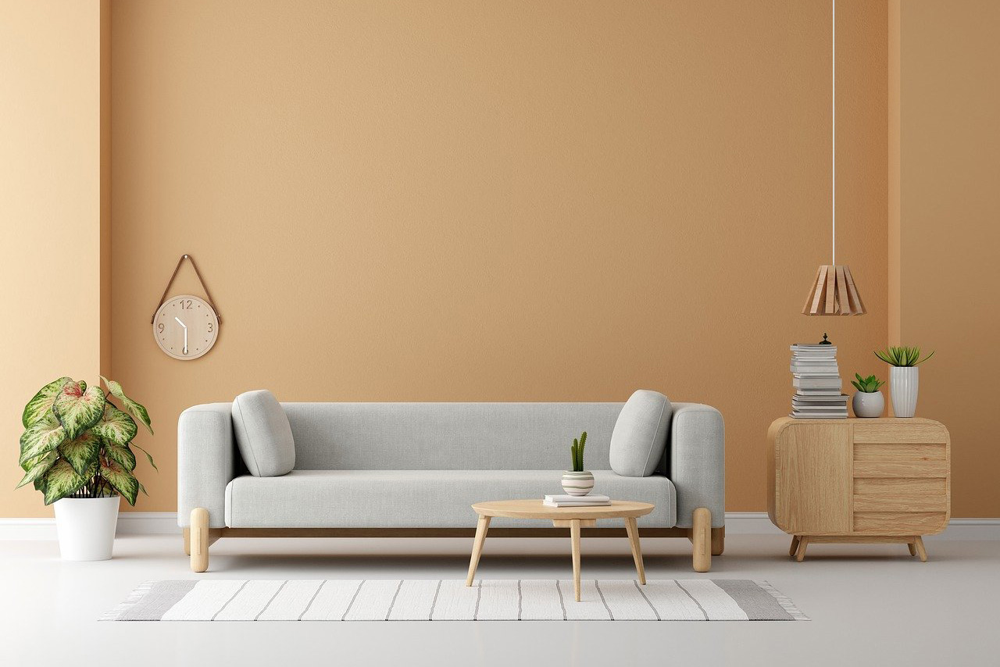

TUOHON KUVAKARUSELLIIN VOISI TULLA nämä kolme kuvaa: ihmisiä maalaamassa, ihmisiä tapetoimassa, ihmisiä esittelemässä värimalleja.
Tällä tavalla nuo kuvatkin omalta osaltaa esittelisivät sivun sisältöä, eli palveluja.

Sitten tapetointipalveluista lisää tähän seuraavaksi.
Ja sitten siitä värienneuvontapalvelusta tähän myös, voisi olla esimerkki linkki vielä sinne väritestaussivullekin. Vaikka siihen pääsee navigointipalkin kauttakin.
Voisi olla myös linkki sinne galleriaan, jossa voi käydä valmiita töitä katsomassa.